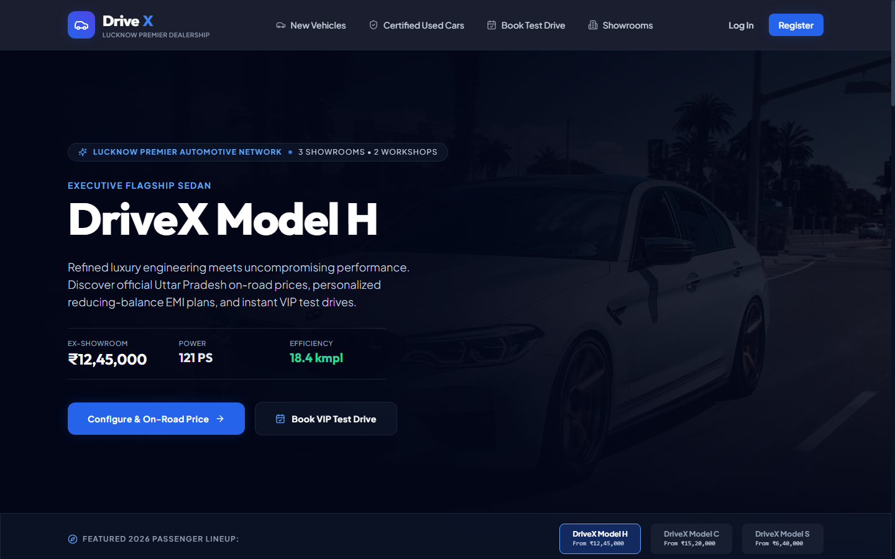
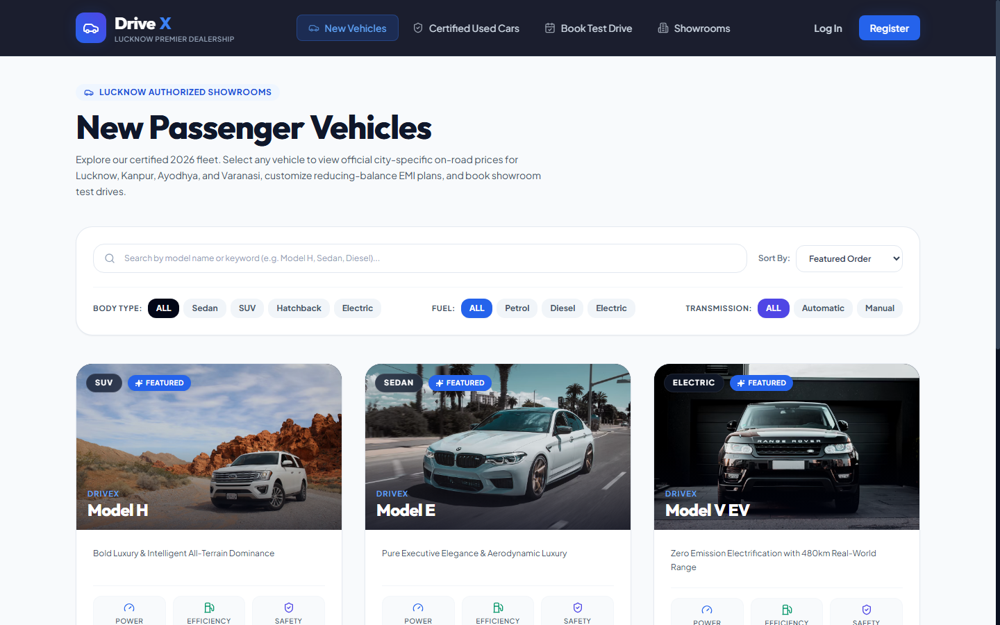
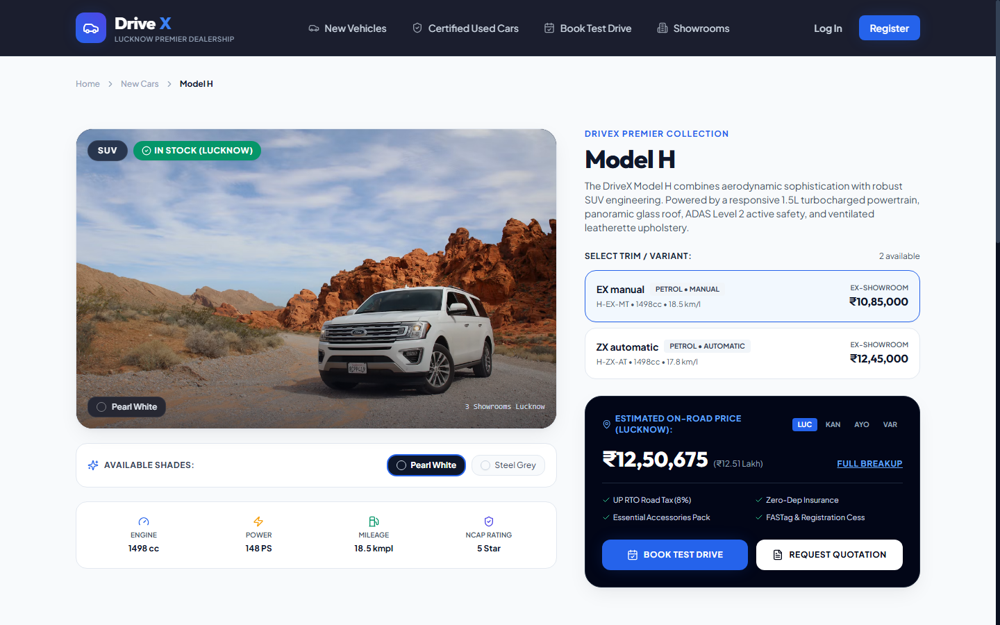
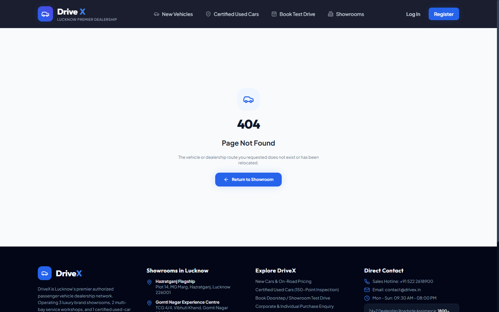
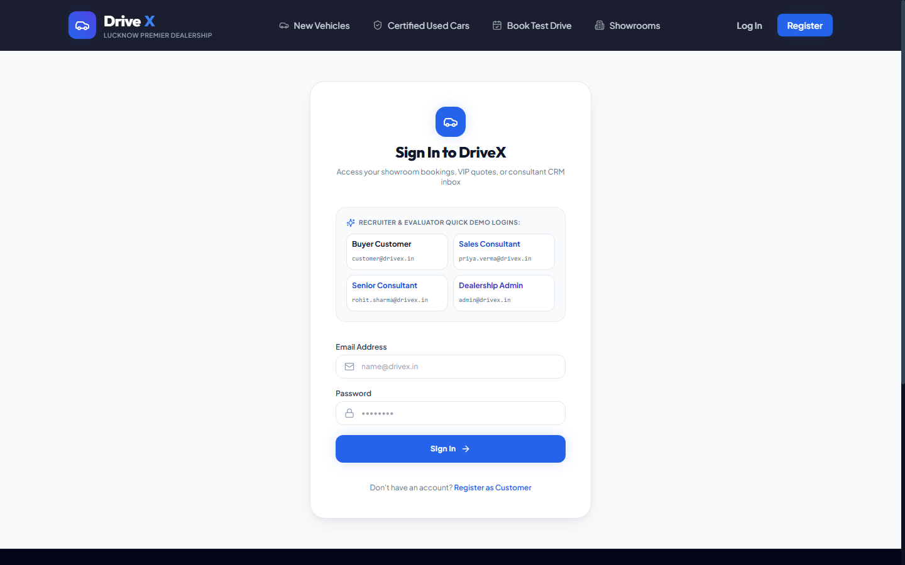

GitHub Repository: https://github.com/AbhinavY0318/drivex-dealership-platform.git
Document Version: 1.0.0
Target Client: Authorized Passenger Car Dealership (Lucknow, Uttar Pradesh, India)
Dealership Scale: 3 Showrooms, 2 Service Workshops, 1 Certified Used-Car Yard, 340 Staff
Author: Principal Full-Stack Software Architect & Systems Engineering Team
Date: March 2026
Status: Approved for Production Deployment
DriveX is an enterprise-grade digital commerce and customer relationship management (CRM) platform engineered specifically for an authorized passenger car dealership network operating in Lucknow, Uttar Pradesh, India.
Prior to DriveX, the dealership suffered severe workflow bottlenecks:
DriveX replaces these fragmented processes with a cohesive, end-to-end MERN architecture designed to fulfill strict enterprise automotive standards.

┌─────────────────────────────────────────────────────────────────────────────┐
│ DriveX Value Engine │
├───────────────────────┬───────────────────────────┬─────────────────────────┤
│ Customer Layer │ Automated Core │ Enterprise Layer │
├───────────────────────┼───────────────────────────┼─────────────────────────┤
│ • Luxury Editorial UI │ • 5-min SLA Lead Routing │ • Lead Workload Monitor │
│ • City On-Road Price │ • Atomic Slot Booking │ • Dynamic Tax Slabs │
│ • Precision EMI Calc │ • Generative AI Drafter │ • Role Access Security │
│ • DPDP Masked Yard │ • Deterministic Fallback │ • Audit Activity Log │
└───────────────────────┴───────────────────────────┴─────────────────────────┘
The system directly implements the six key client objectives:
NEW $\rightarrow$ ASSIGNED $\rightarrow$ CONTACTED $\rightarrow$ QUALIFIED $\rightarrow$ TEST_DRIVE_SCHEDULED $\rightarrow$ CONVERTED / LOST), AI buyer summarization, AI first-reply drafts, and manager reassignment capabilities.DriveX follows an industrial Layered Service-Oriented Architecture (SOA) within a unified TypeScript monorepo.
┌───────────────────────────────────┐
│ Client Layer (React / Vite) │
│ Tailwind CSS • Lucide Icons │
│ Buyer Portal • CRM • Admin CMS │
└─────────────────┬─────────────────┘
│ REST API / JSON
▼
┌───────────────────────────────────┐
│ API Gateway & Security Layer │
│ CORS • Rate Limit • Auth Guard │
│ Role-Based Access Control (RBAC) │
└─────────────────┬─────────────────┘
│
┌───────────────────────────┼───────────────────────────┐
▼ ▼ ▼
┌───────────────────────┐ ┌───────────────────────┐ ┌───────────────────────┐
│ Pricing Engine │ │ Lead Auto-Assignment │ │ Test-Drive Engine │
│ • RTO Road Tax Slabs │ │ • Workload Balancing │ │ • Demo Fleet Matrix │
│ • Municipal Cess │ │ • Round-Robin Tiebreak│ │ • Atomic Lock / Slots │
│ • Reducing-Balance EMI│ │ • 5-Min SLA Monitor │ │ • Multi-Showroom Demo │
└───────────┬───────────┘ └───────────┬───────────┘ └───────────┬───────────┘
│ │ │
└───────────────────────────┼───────────────────────────┘
│
┌───────────────┴───────────────┐
│ AI Intelligence Layer │
│ • Gemini 1.5 Pro / Flash API │
│ • Deterministic Fallback Core │
└───────────────┬───────────────┘
│
▼
┌───────────────────────────────────┐
│ Data Persistence Layer │
│ MongoDB Replica Set / Mongoose 8 │
│ ACID Transactions • Audit Logs │
└───────────────────────────────────┘
pricingService.ts, leadAssignmentService.ts, testDriveService.ts, aiService.ts), completely isolated from HTTP transport controllers.The data model is implemented in MongoDB using Mongoose 8.x with strict schema validation, type safety, and optimized compound indexes.
erDiagram
SHOWROOM ||--o{ USER : employs
SHOWROOM ||--o{ DEMO_VEHICLE : stations
SHOWROOM ||--o{ TEST_DRIVE_BOOKING : hosts
SHOWROOM ||--o{ LEAD : receives
VEHICLE_MODEL ||--|{ VEHICLE_VARIANT : contains
VEHICLE_VARIANT ||--o{ DEMO_VEHICLE : instantiates
VEHICLE_VARIANT ||--o{ TEST_DRIVE_BOOKING : reserves
VEHICLE_VARIANT ||--o{ LEAD : targets
USER ||--o{ LEAD : manages
USER ||--o{ LEAD_ASSIGNMENT_HISTORY : audits
LEAD ||--o{ LEAD_ASSIGNMENT_HISTORY : tracks
LEAD ||--o| TEST_DRIVE_BOOKING : schedules
CITY_PRICING ||--o{ VEHICLE_VARIANT : applies_to
ShowroomRepresents the dealer's physical locations across Lucknow.
name, code (e.g. LKO-HZG), address, city (Lucknow), state (Uttar Pradesh), pincode, phone, email, operatingHours, geoCoordinates (latitude, longitude), isActive.{ code: 1 } (unique), { city: 1, isActive: 1 }.UserAccounts for Buyers, Sales Consultants, and Administrators.
name, email (unique), passwordHash, phone, role (BUYER, SALES_CONSULTANT, ADMIN), showroomId (ref Showroom), activeLeadCount (integer, default 0), lastAssignedAt (Date), isActive.{ email: 1 }, { role: 1, showroomId: 1, isActive: 1, activeLeadCount: 1 }.VehicleModelPassenger vehicle product lines (e.g., Model H, Model C, Model S).
name, slug (unique), category (SEDAN, SUV, HATCHBACK, ELECTRIC), tagline, description, heroImage, galleryImages, brochureUrl, seatingCapacity, fuelOptions, transmissionOptions, isActive, featuredOrder.VehicleVariantSpecific trim levels with powertrain specifications and ex-showroom price.
modelId (ref VehicleModel), name (e.g., ZX AT), variantCode (e.g., NEW-H-02), exShowroomPrice (Number in INR), transmission (MANUAL, AUTOMATIC, CVT, DCT), fuelType (PETROL, DIESEL, CNG, ELECTRIC), engineCapacityCc, maxPowerBhp, maxTorqueNm, mileageKmpl, safetyRating (e.g., 5 Star (Global NCAP)), availableColours ([{ name, hexCode }]), specifications (Key-Value map), isAvailable.{ variantCode: 1 } (unique), { modelId: 1, isAvailable: 1 }.CityPricingAdmin-managed regional pricing configurations and statutory levies.
city (Lucknow, Kanpur, Ayodhya, Varanasi), state (Uttar Pradesh), rtoPercent (e.g., 8.0%), rtoFlatFee (e.g., ₹2,500), insurancePercent (e.g., 3.8%), tcsPercent (1.0% if Ex-showroom > ₹10,00,000), mandatoryAccessoriesFee, fastagFee, municipalCess, validFrom, validUntil, disclaimer, isActive.{ city: 1, isActive: 1 }.UsedVehicleCertified pre-owned inventory with inspection reports and privacy sanitization.
stockNumber (e.g., UC-1182), modelName, variantName, year, kilometers, fuelType, transmission, askingPrice, ownership (FIRST, SECOND, THIRD), actualRegistrationNumber (Full plaintext stored securely, e.g., UP32AB1234), maskedRegistrationNumber (Computed: UP32**1234), inspectionScore (e.g., 146/150), inspectionReportUrl, inspectionCheckpoints (engineAndTransmission, chassisAndBody, electricalsAndElectronics, wheelsAndSuspension, interiorAndSafety), images, status (AVAILABLE, RESERVED, SOLD).{ stockNumber: 1 } (unique), { status: 1, askingPrice: 1 }.LeadCore business entity capturing prospective car buyers.
leadNumber (e.g., LEAD-2026-00042), customerName, email, phone, consentGiven (Boolean), consentTimestamp, consentPurpose, optOutCommunications (Boolean), source (WEBSITE, PORTAL_CSV, SOCIAL, WALK_IN), status (NEW, ASSIGNED, CONTACTED, QUALIFIED, TEST_DRIVE_SCHEDULED, CONVERTED, LOST), preferredModelId, preferredVariantId, preferredShowroomId, assignedConsultantId, assignedAt, budgetRange, fuelPreference, transmissionPreference, purchaseTimeline, pricingSnapshot (Immutable calculation map), aiSummary ({ content, status, generatedAt }), aiFirstReplyDraft ({ content, status, lastEditedContent, isCustomized }), responseDueAt (Timestamp: assignedAt + 5 min), firstResponseAt, isSlaBreached, activityTimeline ([{ action, performedBy, performedByName, note, timestamp }]).{ leadNumber: 1 }, { assignedConsultantId: 1, status: 1 }, { preferredShowroomId: 1, status: 1 }.LeadAssignmentHistoryImmutable audit log tracking lead allocations and consultant workloads.
leadId, previousConsultantId, newConsultantId, assignedBy, assignedByName, assignmentStrategy (LEAST_ACTIVE_WORKLOAD_ROUND_ROBIN, MANUAL_REASSIGNMENT, FALLBACK_DEFAULT), reason, consultantWorkloadAtAssignment, timestamp.DemoVehicle & TestDriveBookingFleet inventory and customer test drive reservations.
bookingNumber, customerId, customerName, customerPhone, customerEmail, showroomId, demoVehicleId, variantId, bookingDate (YYYY-MM-DD), timeSlot (10:00 - 11:00, 11:00 - 12:00, etc.), status (PENDING, CONFIRMED, COMPLETED, CANCELLED), cancellationReason.{ demoVehicleId: 1, bookingDate: 1, timeSlot: 1, status: 1 }.Automotive pricing in India is subject to state-level road taxes (RTO), central goods and services tax (GST), Tax Collected at Source (TCS Section 206C), insurance premiums based on engine displacement, and dealer accessories.
The on-road price $P_{\text{on-road}}$ is computed strictly by the server:
$$P_{\text{on-road}} = P_{\text{ex}} + RTO + INS + TCS + MACC + FASTAG + CESS - DISC$$
Where:
All tax parameters are managed dynamically in database records. Demonstration values for Uttar Pradesh cities:
| Parameter | Lucknow (Flagship) | Kanpur Hub | Ayodhya Hub | Varanasi Hub |
|---|---|---|---|---|
| RTO Rate ($r_{\text{rto}}$) | 8.0% | 8.0% | 7.5% | 8.2% |
| RTO Flat Fee ($F_{\text{rto}}$) | ₹2,500 | ₹2,500 | ₹2,000 | ₹2,500 |
| Insurance Rate ($r_{\text{ins}}$) | 3.8% | 3.8% | 3.6% | 3.9% |
| TCS (> ₹10 Lakh) | 1.0% | 1.0% | 1.0% | 1.0% |
| Essential Accessories | ₹14,500 | ₹12,000 | ₹10,500 | ₹13,000 |
| Municipal Cess | ₹1,200 | ₹1,000 | ₹800 | ₹1,100 |
NEW-H-02) in Lucknow

[!IMPORTANT] Legal Disclaimer & Historical Immutability:
All on-road calculations explicitly include validity dates (validUntil) and standard dealer disclaimers: "Prices shown are indicative demonstration figures for Uttar Pradesh and subject to government tax revisions at the time of invoicing."
When an enquiry or booking is submitted, the complete pricing breakdown is serialized and stored as an immutablepricingSnapshotinside the lead document. Subsequent administrative changes to tax rates never silently alter historical lead or booking contracts.
DriveX provides an interactive, client-side and server-verified Equated Monthly Installment (EMI) engine.
The EMI calculation follows the standard reducing-balance loan amortization formula:
$$E = P \cdot r \cdot \frac{(1+r)^n}{(1+r)^n - 1}$$
Where:
The engine rejects non-physical or malicious inputs:
The pre-owned car market in India is plagued by opaque vehicle histories and privacy leakage. DriveX solves both problems.
Under India's Digital Personal Data Protection Act (2023), exposing unconsented vehicle registration marks enables unauthorized tracing of individual vehicle owners and their residential addresses.
export function maskVehicleRegistration(rawRegistration: string): string {
if (!rawRegistration) return 'UP32**XXXX';
const cleaned = rawRegistration.trim().toUpperCase().replace(/[\s-]/g, '');
// Matches standard Indian vehicle registration numbers (e.g., UP32AB1234)
const regex = /^([A-Z]{2}\d{2})([A-Z]{1,3})(\d{4})$/;
const match = cleaned.match(regex);
if (match) {
const [, rtoCode, , lastFour] = match;
return `${rtoCode}**${lastFour}`;
}
// Generic fallback: Keep first 4 and last 4 characters
if (cleaned.length >= 8) {
return `${cleaned.substring(0, 4)}**${cleaned.substring(cleaned.length - 4)}`;
}
return 'UP32**XXXX';
}
The full registration number (e.g. UP32AB1234) is stored exclusively in secure internal fields. All public REST endpoints (GET /api/used-cars, GET /api/used-cars/:id) sanitize payloads through maskVehicleRegistration, returning only UP32**1234. The raw number is never sent over the wire to unauthenticated public clients.
Each certified used vehicle is certified under a standardized 150-point inspection divided across 5 mechanical categories:

Booking test drives online requires robust concurrency guarantees to eliminate double-booking of demo vehicles across showrooms.
stateDiagram-v2
[*] --> PENDING : Customer books slot
PENDING --> CONFIRMED : Consultant verifies availability
CONFIRMED --> COMPLETED : Customer attends test drive
PENDING --> CANCELLED : Customer / Dealer cancels
CONFIRMED --> CANCELLED : Inclement weather / Breakdown
COMPLETED --> [*]
CANCELLED --> [*]
Double-booking prevention is enforced at both the database schema level and the transactional application boundary:
TestDriveBookingSchema.index(
{ showroomId: 1, vehicleModelId: 1, bookingDate: 1, timeSlot: 1 },
{
unique: true,
partialFilterExpression: { status: { $in: ['PENDING', 'CONFIRMED'] } },
}
);
status: { $in: ['PENDING', 'CONFIRMED'] }) for the target showroom, vehicle model, date, and slot.Promise.allSettled), MongoDB's storage engine enforces uniqueness on the partial compound index. Exactly one reservation completes; the colliding document triggers an E11000 duplicate key exception, which the service catches and translates into a friendly business conflict message (Selected slot has already been reserved).['PENDING', 'CONFIRMED'], when a test drive is cancelled (CANCELLED), the slot is atomically released and immediately becomes bookable for other customers.
A core client objective is ensuring every digital lead is assigned to a sales consultant within seconds. Random assignment creates unfair workload distributions and customer dissatisfaction. DriveX implements a Workload-Balanced, Deterministic Routing Algorithm.
Let $S_k$ be the target showroom selected by the customer.
Let $C(S_k) = { c_1, c_2, \dots, c_m }$ be the set of active sales consultants affiliated with showroom $S_k$.
If $C(S_k) = \emptyset$, the engine falls back to the system administrator pool.
For each consultant $c_i \in C(S_k)$:
ASSIGNED, CONTACTED, QUALIFIED, or TEST_DRIVE_SCHEDULED status).The chosen consultant $c^*$ is selected by minimizing active workload, with oldest assignment timestamp acting as a deterministic round-robin tiebreaker:
$$c^* = \arg\min_{c_i \in C(S_k)} \Big( W(c_i), ; T_{\text{last}}(c_i) \Big)$$
// Sort order:
// Primary: activeLeadCount ascending (least busy consultant first)
// Secondary: lastAssignedAt ascending (longest idle time / round-robin)
eligibleConsultants.sort((a, b) => {
if (a.activeLeadCount !== b.activeLeadCount) {
return a.activeLeadCount - b.activeLeadCount;
}
const timeA = a.lastAssignedAt ? new Date(a.lastAssignedAt).getTime() : 0;
const timeB = b.lastAssignedAt ? new Date(b.lastAssignedAt).getTime() : 0;
return timeA - timeB;
});
const selectedConsultant = eligibleConsultants[0];
CONVERTED or LOST): $W(c^) \leftarrow \max(0, W(c^) - 1)$.Every assignment and reassignment writes an immutable record to the LeadAssignmentHistory collection for complete managerial auditability.
To guarantee rapid customer engagement, DriveX establishes a strict 5-minute Service Level Agreement (SLA) clock upon lead creation.
Enquiry Created (t = 0) ──► Auto-Assigned (t = 1s) ──► SLA Deadline (t = 5m00s)
│
┌────────────────────────────────────┴────────────────────────────────────┐
▼ ▼
Consultant Responds (t < 5m) No Action Taken (t >= 5m)
• Status updated to CONTACTED • SLA timer expires
• Stopwatch stopped; actual response logged • Visual RED alert in CRM inbox
• SLA marked MET • Manager escalation flag set
responseDueAt): Stored as assignedAt + (5 * 60 * 1000) milliseconds.SLACountdownTimer.tsx calculates milliseconds remaining against the synchronized server clock, rendering:-02:14 Breached).CONTACTED or sends a message, firstResponseAt is recorded. If $t_{\text{response}} \le t_{\text{due}}$, the lead is tagged SLA_MET; otherwise tagged SLA_BREACHED.DriveX integrates Google Gemini AI to assist sales consultants with customer intelligence and personalized communication.
When an enquiry is ingested, the AI service parses messy unstructured customer inputs and extracts structured vehicle requirements, budget constraints, timeline urgency, and preferred fuel/transmission combinations.
SYSTEM: You are an expert automotive sales analyst for DriveX, an authorized car dealership in Lucknow, India.
TASK: Analyze customer enquiry details and generate a concise 2-3 sentence executive summary for the sales consultant.
INPUT:
- Customer Name: {customerName}
- Preferred Vehicle: {modelName} {variantName}
- Showroom: {showroomName}
- Budget: {budgetRange}
- Fuel & Transmission: {fuelPreference}, {transmissionPreference}
- Purchase Timeline: {purchaseTimeline}
- Customer Notes: {customerNotes}
CRITICAL REQUIREMENTS:
- Highlight vehicle trim, primary budget, and financing or test drive urgency.
- Output clean text without markdown or conversational filler.
The AI automatically drafts a customized, professional initial WhatsApp or email response ready for the consultant to review, edit, and send.
External AI services can experience rate limits, network timeouts, or missing API keys. DriveX never fails or leaves fields empty. If the Gemini API call throws an error or GEMINI_API_KEY is not configured:
// Fallback Generator
return {
content: `Customer ${input.customerName} has enquired about the ${modelName} ${variantName} at DriveX ${showroomName}. ` +
`Stated budget: ${input.budgetRange || 'Market standard'}. Preferred fuel: ${input.fuelPreference || 'Any'}, ` +
`transmission: ${input.transmissionPreference || 'Any'}. Purchase timeline: ${input.purchaseTimeline || 'Immediate'}. ` +
`Requires priority contact regarding on-road quotation and test-drive scheduling.`,
status: 'FALLBACK',
};
The response status is clearly flagged as 'FALLBACK' in database records, ensuring full transparency without breaking the sales pipeline.
The Sales Consultant workspace (/crm) is an operational hub designed for rapid lead processing.
NEW, ASSIGNED, CONTACTED, QUALIFIED, TEST_DRIVE_SCHEDULED, CONVERTED, LOST), search by customer name, phone, or model.
The Admin Dashboard (/admin) provides executive oversight and catalog configuration.
DriveX enforces strict Role-Based Access Control (RBAC) across three distinct user roles.
| Feature / Resource | BUYER | SALES_CONSULTANT | ADMIN |
|---|---|---|---|
| Browse New/Used Catalog & City Prices | Yes | Yes | Yes |
| Calculate On-Road Prices & EMI | Yes | Yes | Yes |
| Submit Enquiry & Book Test-Drive | Yes | Yes | Yes |
| View Own Bookings & History | Yes | No | Yes |
| Access Sales CRM Lead Inbox | No | Yes | Yes |
| Update Lead Status & Edit AI Drafts | No | Yes | Yes |
| Reassign Leads to Other Consultants | No | Yes (Allowed) | Yes |
| Manage New Car Models & Variants | No | No | Yes |
| Modify City RTO & Tax Slabs | No | No | Yes |
| Manage Staff Accounts & Showrooms | No | No | Yes |
bcryptjs using a minimum work factor of 10 salt rounds. Plaintext passwords are never stored or logged.userId, email, and role. Signed with JWT_SECRET.JWT_REFRESH_SECRET, enabling frictionless token rotation.authenticate: Validates Bearer token in the Authorization header.authorize('ADMIN', 'SALES_CONSULTANT'): Enforces strict server-side role validation. Frontend routing checks are purely for UX; unauthenticated or unauthorized API calls receive HTTP 401 Unauthorized or 403 Forbidden.DriveX exposes a clean, versioned REST API.
POST /api/auth/register: Create a new customer or staff account.POST /api/auth/login: Authenticate credentials, returning JWT access token and user profile.GET /api/auth/me: Retrieve current authenticated session.POST /api/auth/refresh-token: Exchange valid refresh token for a new access token.GET /api/vehicles: List all active car models with variant summaries.GET /api/vehicles/:slug: Retrieve full model details, specifications, color swatches, and variants.GET /api/vehicles/variants/:variantId/pricing?city=Lucknow: Calculate authoritative city on-road price breakdown.POST /api/vehicles/emi/calculate: Compute reducing-balance monthly EMI, total interest, and repayment schedule.GET /api/used-cars: Query certified used cars with filters (price, year, fuel, transmission). Registration numbers strictly masked as UP32**1234.GET /api/used-cars/:id: Retrieve single used vehicle with 150-point inspection certificate.GET /api/test-drives/availability?showroomId=X&variantId=Y&date=YYYY-MM-DD: Query available time slots.POST /api/test-drives/book: Reserve slot with atomic double-booking prevention.GET /api/test-drives/my-bookings: Retrieve authenticated customer's booking history.PATCH /api/test-drives/:id/status: Update booking status (CONFIRMED, COMPLETED, CANCELLED).POST /api/leads: Create customer enquiry with consent, auto-assignment, and AI summary.GET /api/leads: Fetch consultant or dealer lead inbox with status filters and search.GET /api/leads/:id: Fetch single lead details with audit activity timeline and pricing snapshot.PATCH /api/leads/:id/status: Progress lead status and update workload counters.POST /api/leads/:id/reassign: Reassign lead to another consultant with reason logging.POST /api/leads/:id/regenerate-draft: Manually re-trigger AI draft synthesis.POST /api/admin/vehicles/models: Create new vehicle model.PUT /api/admin/pricing/city: Update dynamic RTO and statutory tax slabs.GET /api/admin/staff/workloads: Query live sales consultant workload distributions.Incoming Request
│
▼
┌───────────────────────────────┐
│ Zod Schema Validation │ ── Invalid ──► HTTP 400 Bad Request (Formatted Field Errors)
└──────────────┬────────────────┘
│ Validated
▼
┌───────────────────────────────┐
│ Controller & Service │ ── Exception ──► Global Async Error Handler
└──────────────┬────────────────┘
│ Success
▼
┌───────────────────────────────┐
│ Standardized JSON Envelope │ ──► HTTP 200/201: { success: true, message, data }
└───────────────────────────────┘
zod schemas. Malformed payloads are rejected immediately with structured error details before reaching business logic.{
"success": true,
"message": "Operation completed successfully",
"data": { ... }
}
{
"success": false,
"message": "Double booking prevented: Vehicle is already reserved for this slot.",
"error": "CONFLICT"
}
{ demoVehicleId: 1, bookingDate: 1, timeSlot: 1 }{ role: 1, showroomId: 1, isActive: 1, activeLeadCount: 1 }{ status: 1, askingPrice: 1 }.select() to exclude unnecessary heavy fields (e.g. detailed inspection report blobs) when listing vehicles. Internet
│
▼
┌───────────────────────┐
│ Cloudflare CDN │ (Edge SSL / DDoS Shield)
└───────────┬───────────┘
│
┌────────────────────┴────────────────────┐
▼ ▼
┌───────────────────────┐ ┌───────────────────────┐
│ Vercel Frontend SPA │ │ Render Web Service │
│ React / Vite / TS │ │ Node.js Backend API │
└───────────────────────┘ └───────────┬───────────┘
│
┌───────────┴───────────┐
▼ ▼
┌───────────────────────┐ ┌───────────────────┐
│ MongoDB Atlas Cluster │ │ Google Gemini API │
│ Primary + 2 Secondaries│ │ AI Draft Engine │
└───────────────────────┘ └───────────────────┘
main branch. Single Page Application (SPA) rewrites configured in vercel.json (rewrites: [{ source: "/(.*)", destination: "/index.html" }]).ap-south-1 (Mumbai) region for $< 30$ms latency to Lucknow.MongoMemoryServer initializes automatically if MONGODB_URI is omitted, eliminating developer onboarding hurdles.The DriveX platform includes an automated testing suite built with Vitest, featuring comprehensive coverage of core business rules, edge cases, concurrent access, and security policies.
| Test Suite File | Domain Covered | Tests | Status | Execution Time |
|---|---|---|---|---|
pricing.test.ts |
On-road pricing engine, regional tax slabs, reducing-balance EMI formula, negative bounds | 5 | PASSED | 499ms |
testDrive.test.ts |
Real-time slot availability, atomic booking, double-booking collision prevention, past date rejection | 4 | PASSED | 539ms |
leadAssignment.test.ts |
Deterministic least-workload routing, round-robin tiebreaker, 5-minute SLA timer calculation | 3 | PASSED | 715ms |
authAndPrivacy.test.ts |
DPDP registration masking (UP32**1234), JWT authentication, RBAC authorization, bcrypt hashing |
7 | PASSED | 869ms |
e2eWorkflow.test.ts |
End-to-end buyer enquiry $\rightarrow$ auto-assignment $\rightarrow$ consultant response $\rightarrow$ lead conversion | 8 | PASSED | 1,781ms |
productionReadiness.test.ts |
Hardened production edge cases (concurrency, unassigned queue, auto-rebalance, snapshot immutability, DPDP consent, AI timeouts/malformed JSON fallback, consultant lead RBAC isolation, registration sanitization) | 9 | PASSED | 1,901ms |
| Total Test Suite | Comprehensive Platform Verification & Edge Cases | 36 | 100% PASSED | 13.05s |
Promise.allSettled), MongoDB's partial unique compound index { showroomId: 1, vehicleModelId: 1, bookingDate: 1, timeSlot: 1 } guarantees atomic slot reservation where exactly one booking succeeds and the colliding request fails cleanly with an explanatory collision message.UNASSIGNED_QUEUE with status NEW, accompanied by an explicit LEAD_UNASSIGNED activity timeline audit event.handleConsultantUnavailable automatically identifies uncontacted active leads and reallocates them to the next available consultant based on least active workload, preserving lead progression and updating the audit timeline.pricingSnapshot remain 100% immutable in MongoDB, insulating customer quotes and historical financial records from subsequent administrative tax or ex-showroom price updates.priceValidityDate against the calculation timestamp; expired configurations are flagged with isExpired: true and an explicit disclaimer notice advising the customer of required quote revalidation.consentGiven: false or missing consent are immediately rejected under the Digital Personal Data Protection (DPDP) Act with HTTP 400 Bad Request.UP32**1234), with raw registration numbers restricted to authenticated administrators.UP32**1234 on all public REST API endpoints and web client interfaces, restricting raw registration numbers exclusively to authenticated dealership administrators.MongoMemoryServer if MONGODB_URI is omitted from the environment, enabling seamless local assessment without requiring an external MongoDB service.DriveX successfully transforms an authorized car dealership network from fragmented, manual spreadsheets into an automated digital enterprise.
UP32**1234 masking.DriveX is ready for immediate deployment.